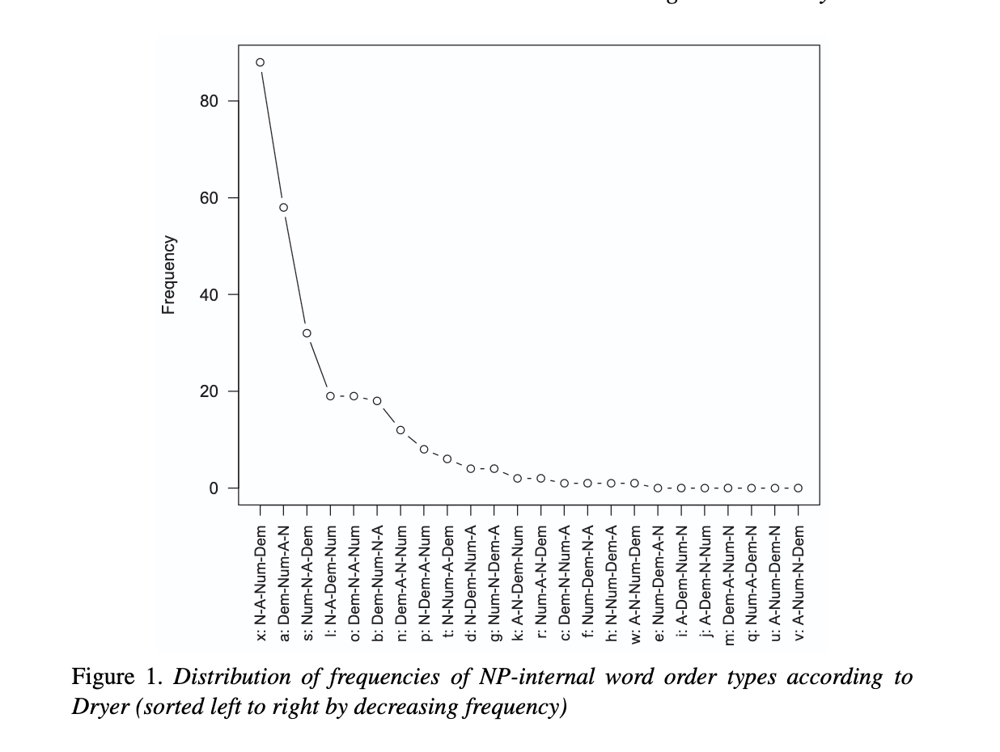

Sitzung 1: Einführung
eva.scheel-huber@uni-koeln.de
14. 10. 2026
beide Bücher sind als Ebook über die Uni-Bib abrufbar
Formeln zu lernen?
\[ f(t) = \frac{\Gamma (\frac{\nu + 1}{2})}{\sqrt{\nu}\Gamma(\frac{\nu}{2})}(1+\frac{t^2}{\nu})^{-(\nu + 1 )/2} \]
Statistik und R fallen nicht allen gleich leicht und das ist in Ordnung !!!
Lust und Motivation zum Lernen (und möglicherweise Frustrationstoleranz)
Lust und Motivation zum Lernen (und möglicherweise Frustrationstoleranz)
→ keine Verwendung von Generativen KI Chatbots (e.g. ChatGPT)
Zurück zum Taschenrechner und dem Lernen:
“Using ChatGPT with R requires a good baseline knowledge of R to actually be useful. A good analogy for this is with recipes. ChatGPT is really confident at spitting out plausible-looking recipes. A few months ago, for fun, I asked it to give me a cookie recipe. I got back something with flour, eggs, sugar, and all other standard-looking ingredients, but it also said to include 3/4 cup of baking powder. That’s wild and obviously wrong, but I only knew that because I’ve made cookies before.” (Heiss, n.d.)
Zurück zum Taschenrechner und dem Lernen:
“Using ChatGPT with R requires a good baseline knowledge of R to actually be useful. A good analogy for this is with recipes. ChatGPT is really confident at spitting out plausible-looking recipes. A few months ago, for fun, I asked it to give me a cookie recipe. I got back something with flour, eggs, sugar, and all other standard-looking ingredients, but it also said to include 3/4 cup of baking powder. That’s wild and obviously wrong, but I only knew that because I’ve made cookies before.” (Heiss, n.d.)
+ beim Lernen ist der Prozess relevant und nicht das Produkt!
Gibt es weitere Punkte eurerseits?
Hypothese: Der Aufbau von Sprachen folgt bestimmten Universalien.
z.B. Universalie 20 (Greenberg et al. 1963):
“When any or all of the items (demonstrative, numeral, and descriptive adjective) precede the noun, they are always found in that order. If they follow, the order is either the same or its exact opposite.”
Universalie 20 (Greenberg et al. 1963) quantitativ untersucht:

Figure 1: Dryer (2006) in Cysouw (2010)
→ die zwei häufigsten Worstellungen sind: N-A-Num-Dem und Dem-Num-A-N
hinsichtlich der Universalie 20 (Greenberg et al. 1963) erlaubt uns die Statistik u.a.: